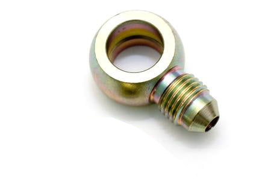
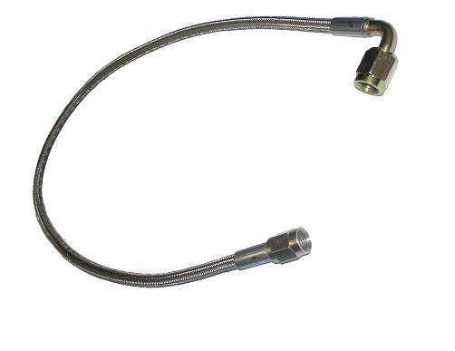
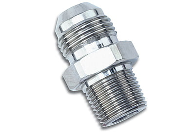
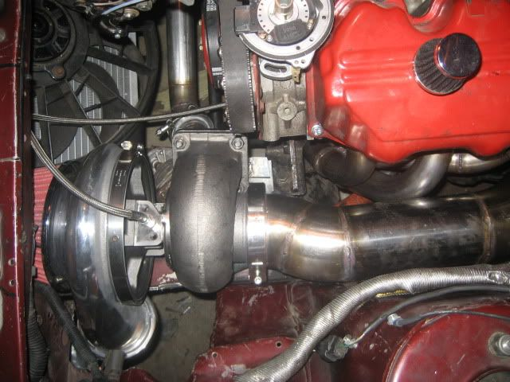
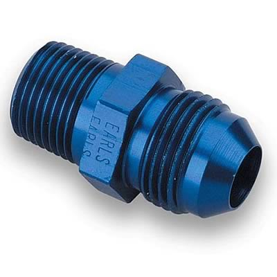
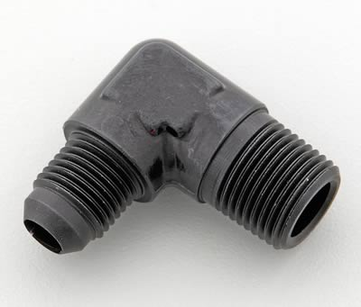

-
ATP-FTG-018 BANJO FITTING  Use stock banjo bolt and go to NAPA for some new crush seals
ATP-OIL-034 BRAIDED OIL FEED LINE, 2' LONG 
these part numbers are from http://www.atpturbo.com/ Good place to get all your boost stuffs, in one stop at least. This assembly is for use with aftermarket turbo with threaded oil supply fitting.
ATP-OIL-006 1/8' NPT TO -4 .  This part is available through Russell or XRP also, XRP p# is 981604
I'll have some more after I make sure they work. Just always hated having to try and piece together shit. So here's some exp. for everyone. Free. Feel free to add to this thread with stuff that isn`t already documented, part number wise
Exercising my constitutional right to be awesome
good thing....1.5.2. Podium winning cars do NOT need to be running at the checkered flag -
This is for any turbo mounted in the stock position right? I have a 3' one and it's pretty tight getting it to reach the turbo with satan's relocation manifold.

1988 300zxt. gt35, stance, etc. Wheels: Varrstoen ES2 18x9.5 et-13 225/40. 18x10.5 et0 245/40
1990 jetta vr6'd -
What? Hell no look.... 3' should be PLENTY. That is what I run and sometimes I feel it is too long. However with it that long I can keep it toward the front of the turbo away from the hot turbine housing.DeleriousZ wrote: This is for any turbo mounted in the stock position right? I have a 3' one and it's pretty tight getting it to reach the turbo with satan's relocation manifold.
85 Z31 6.0 LSX turbo 766whp/792wtq
04 GTO, LS6, big cam, porting, N20… underway for summertime daily driver. -
ah, yours is routed differently, I don't have a 90* fitting on mine so it goes up along the fender.
1988 300zxt. gt35, stance, etc. Wheels: Varrstoen ES2 18x9.5 et-13 225/40. 18x10.5 et0 245/40
1990 jetta vr6'd -
I just used what Gritt posted. The regular banjo fitting with new crush washers. It shoots it right off the front of the block.DeleriousZ wrote: ah, yours is routed differently, I don't have a 90* fitting on mine so it goes up along the fender.85 Z31 6.0 LSX turbo 766whp/792wtq
04 GTO, LS6, big cam, porting, N20… underway for summertime daily driver. -
That is easy getting all the stuff in one stop.
Here's what I used for the block:
http://www.summitracing.com/parts/EAR-9919BFFERL/

For the turbo:

http://www.summitracing.com/parts/SUM-220450B/
I bought an Aeroquip 3' line from an aircraft company.
I know…some people say you shouldn't mix different brands of AN fittings. -
I see, I used a metric to an fitting, then an AN reducer, then the ss line. In hindsight, this option is probably way cheaper lol.SATAN wrote: I just used what Gritt posted. The regular banjo fitting with new crush washers. It shoots it right off the front of the block.
1988 300zxt. gt35, stance, etc. Wheels: Varrstoen ES2 18x9.5 et-13 225/40. 18x10.5 et0 245/40
1990 jetta vr6'd -
still shouldn't have an issue with a 3' line. I have at least 6" of free play, and i didn't use a swivel or a 90 degree/banjo, so my line even takes up a bit more where it has to keep so much of an arch in it.
plus, since the line still only connects to the END of whatever the last bit of your reducer/adapter fittings, shouldn't you have even MORE free line? or am I thinking weirdly…could be. who knows.Four Doors for More Whores -
after installation (turbo in stock location) i could have used a 12" ss line instead of 24". had to grind the motor mount a little to clear the banjo fitting. other wise, worked good. I`m also working on a solution for the oil drain. always had issues doing it nice and easy. course removing the pan isn`t alway easy, but it will make thing nice when it`s done.
Exercising my constitutional right to be awesome
good thing....1.5.2. Podium winning cars do NOT need to be running at the checkered flag -
you could always just order the 12AN nylon braided line from summit like I did for like 30 bucks, cut it to whatever length you desire, and throw some clamps on. Its about as easy as that can get. lol. Looks clean, functions well, and is at least a small improvement over a standard hose.Four Doors for More Whores -
for the drain? not sure how that would work, when installing a t3 on a z the drain on the center section ends up being lower than the oil pan barb, (when using the threaded oil drain flange and proper an fittings) it can be done other ways, and we tried many, but i wanted something with the least amount of dicking around. so we`ll see how that goes.
Exercising my constitutional right to be awesome
good thing....1.5.2. Podium winning cars do NOT need to be running at the checkered flag -
ahhh, I forgot about the stock manifold/turbo location thing. The thing about the one dudes feed with a relocation, the pic of satans....sidetracked.
haha.
Hmm. So about what size housing does it start to be too low to drain properly? I hadn't ever heard anyone mention that becoming an issue.Four Doors for More Whores -
Dusting off an old thread to confirm the PN's in the first post worked beautifully for me this weekend. Stock Nissan hard line cracked due to me trying to flex it too far and they are NLA.
BOM.JPG
oil line.jpg
As stated above, I also removed some material on the engine mount flange to make positioning of the banjo bolt easier.
I thought a 2ft line would be too long but i put a service loop in it and it worked great.

84 AE/Shiro #683/Shiro #820/84 Turbo

Copyright © 2006–. All rights reserved. Privacy Policy